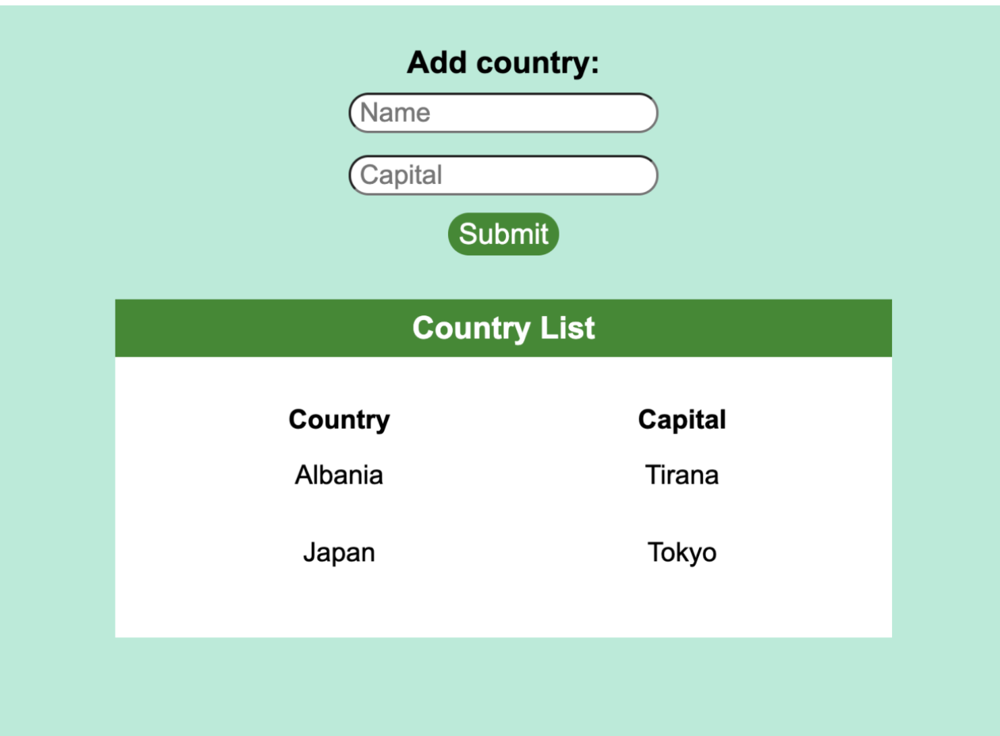

Deploying a MERN app for free to Heroku
We’re going to learn how to build and deploy a MERN-stack app (MongoDB, Express, React, Node) for free to Heroku. For this example, we’ll build a simple app where the user can add the name of a country and the capital city and this information will be displayed in a table.

You can find the source code here.
If you already have a MERN app ready to deploy, you can use that but you’ll need to make a number of small changes to your code. In the following section I’ve highlighted the lines where these are mentioned. Also, your front-end directory (client) should be inside the main project directory with the file containing the Express server at the top level. This is my project structure:
-
main-project-folder
- server.js (this is the Express server)
-
client (this is the create-react-app folder for all front
end code)
- models
- node_modules
- .gitignore
- package.json
BUILDING THE APP
THE BACK-END
First, create a folder for your project (I’ll call it country-info) and inside create a new JavaScript file - server.js. Open your terminal, navigate to the project directory and run the following commands:
npm init
git init
Add a .gitignore file, type in node_modules and save, so that folder isn’t included when we push to our remote repo.
We’ll now set up a basic Express server in our server.js file. First, install the two dependencies we’ll be using - Express and Mongoose. Require these two dependencies at the top of the file:
const express = require("express");
const mongoose = require("mongoose");
I also recommend installing the Nodemon package so you don’t need to restart your server every time you save a change. You can install this globally on your machine by adding the global flag:
npm i nodemon -g
Let’s set up our app with:
const app = express();
We now have to tell the app which port to use. This will be different depending on whether you’re running the app locally on your computer or after it’s been deployed. You can specify the port for when it’s running locally but Heroku will assign a port automatically when it’s deployed. The port number will be made available as an environment variable. So we need to give it the two options like this:
const port = process.env.PORT || 5000;
This is telling the app to check first if there’s an environment variable called PORT available (provided automatically by Heroku) and, if there isn’t, then use port 5000 (you can choose any port that’s free).
Let’s tell the app to listen to the port. You can also add a console.log to confirm it’s connected.
app.listen(port, () => {
console.log("listening on port " + port);
});
Now let’s connect to our databse. If you don’t have MongoDB installed, you can download it here. Now, just like with the port, we need to give it two options depending on whether the app is running locally or with Heroku. If it’s running locally, the app should use the database installed on your computer and, if it’s deployed with Heroku, it should use the mLab MongoDB database that we’ll add to our app on Heroku later.
A connection URI for Mongo will be provided as an environment variable by Heroku when deployed so again we give the app two options like this:
const myMongoUri =
process.env.MONGODB_URI || "mongodb://localhost:27017/country-info";
Now we’ll tell the app to connect to Mongo (if you don’t include the additional options you’ll get warnings in your console):
mongoose.connect(myMongoUri, {
useNewUrlParser: true,
useUnifiedTopology: true,
});
It would be useful to know whether the app has connected to the databse successfully or not after we start the server. We can get it to tell us like this:
const db = mongoose.connection;
db.on("error", () => {
console.log("there was a problem connecting to database");
});
db.once("open", () => {
console.log("connected to database");
});
We can now check that our server works and is able to connect to our local database by running:
nodemon server
Hopefully your server is now running without any issues. Now, as we’ll be saving data to MongoDB, we’ll need to define at least one schema/model. So let’s create a models folder in our project with a JavaScript file called Country.model.js and add the following code:
const mongoose = require("mongoose");
const Schema = mongoose.Schema;
const Country = new Schema({
name: { type: String, requred: true },
capital: { type: String, requred: true },
});
module.exports = mongoose.model("Country", Country);
Then require this model at the top of the server.js file:
const Country = require("./models/Country.model");
We’re almost ready to add our API endpoints. Before we do, we need to add one line to allow the server to parse any JSON it receives in the bodies of POST requests:
app.use(express.json());
I’m going to give my app two endpoints. One to get all the data saved in the database and one to allow us to save new data (you can add endpoints for deleting and editing yourself if you like):
app.get("/countries", (req, res) => {
Country.find().then((countries) => {
res.status(200).send(countries);
});
});
app.post("/addcountry", (req, res) => {
const { name, capital } = req.body;
const country = new Country({ name, capital });
country
.save()
.then(() => {
res.status(200).send("New country was saved successfully");
})
.catch((err) => {
console.log("Error: " + err);
});
});
When we deploy our app later, Heroku is going to use the npm run build command in the package.json file of our front-end to bundle all of the front-end files into one optimised build folder. We need to tell the server where to find these files after this happens.
To do this, we’ll first require a module called path at the top of the file (this module is part of the Node.js core so it doesn’t need to be installed).
const path = require("path");
Now add this line to the file:
app.use(express.static(path.join(__dirname, "client/build")));
The path module that we’ve used simply joins the path to the current directory with the path to the file you specify. Express then knows to look in this location for the static files (which will be our JavaScript and any CSS).
Now take a look in the project’s package.json file and make sure there is a start script and that its value is set to node server (Heroku will use this command to start the app during deployment).
THE FRONT-END
Now let’s create a new React project with:
npx create-react-app client
I’m going to create two components - one will be a form for the user to add information about countries and the other will be to display this information.
This is the first:
import React from "react";
const NewCountryForm = (props) => {
return (
<form onSubmit={props.addCountry}>
<h2>Add country</h2>
<div className="form-section">
<label htmlFor="name">Name: </label>
<input type="text" id="name" name="name" />
</div>
<div className="form-section">
<label htmlFor="capital">Capital: </label>
<input type="text" id="capital" name="capital" />
</div>
<button type="submit">Submit</button>
</form>
);
};
export default NewCountryForm;
And this is the second:
import React from "react";
const CountryDisplay = ({ countries }) => {
if (!countries || countries.length === 0) {
return <h2>No countries saved</h2>;
} else {
return (
<div className="display-wrapper">
<h2>Country List</h2>
<table>
<tr>
<th>Country</th>
<th>Capital</th>
</tr>
{countries.map((country, index) => (
<tr key={index}>
<td>{country.name}</td>
<td>{country.capital}</td>
</tr>
))}
</table>
</div>
);
}
};
export default CountryDisplay;
I need to install one package - axios - in my front-end folder. I’m going to use this to make calls to the server.
npm i axios
Now in the app.js file, I’m going to use two React Hooks - useState and useEffect. The first to save the data in state and the second to trigger our fetch function when the component mounts. So import these along with axios and our two components at the top of the file:
import React, { useState, useEffect } from "react";
import axios from "axios";
import NewCountryForm from "./components/NewCountryForm";
import CountryDisplay from "./components/CountryDisplay";
The return statement should something look like this:
return (
<div className="app-wrapper">
<NewCountryForm addCountry={addCountry} />
<CountryDisplay countries={countries} />
</div>
);
And don’t forget to export the component at the bottom of the file:
export default App;
Above the return statement, we can add a function that makes the GET request to the server and saves the retrieved data in state:
const fetchData = () => {
axios
.get("/countries")
.then((res) => {
setCountries(res.data);
})
.catch((err) => {
console.log(err);
});
};
I want this to run whenever the user opens the app so I’ll use the useEffect Hook we imported:
useEffect(() => {
fetchData();
}, []);
And this is the function that makes a POST request to add a new country and then fetches from the database again:
const addCountry = (e) => {
e.preventDefault();
const name = e.target.name.value;
const capital = e.target.capital.value;
e.target.reset();
axios
.post("/addcountry", { name, capital })
.then((res) => {
fetchData();
})
.catch((err) => {
console.log(err);
});
};
You’ll see that I’m not including the full URI of the server in the API calls. This is because I’m going to add the first part of the URI at the top of the package.json file (of the front-end) so I don’t have to write it out in full every time.
"proxy": "http://localhost:5000"
Now that we’re finished writing the code for the front-end, we’ll go back to the package.json file in the top-level of our project and add a new script that will tell Heroku to create the optimised build version by looking in the client folder, downloading the dependencies and running the build command:
"heroku-postbuild": "cd client && npm install && npm run build"
Now, before deploying, it’s a good idea to run the app locally to make sure everything’s working. If it is and you’ve got no errors, then we can move on to deployment.
DEPLOYMENT TO HEROKU
There are two ways to deploy to Heroku. The first way is going to the Heroku website and connecting to your project’s GitHub repo. The second is using the Heroku CLI in the terminal and a remote Git repo that Heroku creates for you (not involving GitHub at all). We’ll look at both ways below.
CONNECTING A GITHUB REPO
With this method, you need to have your project on GitHub. Then simply go to the Heroku website, select New, Create new app, enter a name and select a region. Then in the deployment section, choose GitHub and then select the repository you want to connect to. You can choose a particular branch and you can also choose between manual deplyment or automatic deployment (your Heroku app will be updated whenever you push to GitHub).
USING THE HEROKU CLI
First, you’ll need the CLI installed on your computer. You can download if from the website here.
After committing all changes to Git, in the project directory in the terminal run:
heroku create
If it’s your first time using the Heroku CLI you’ll be prompted to log in. This command creates a new project that you can access on the Heroku website along with its own Git repo that you can push to.
After that push to the Heroku Git repo with:
git push heroku master
ADDING THE DATABASE
Once the deployment process has completed, go to the Heroku website, choose the project you just created and, in the overview tab, click on configure add-ons, search for mLab MongoDB and add it (use the free sandbox version).
Now open up the app from Heroku and test it out. When you add any data it should be saved to the databse attached to Heroku (you can check the contents of this database by clicking on mLab MongoDB in the overview tab). If you run the app locally it should save to your local MongoDB.